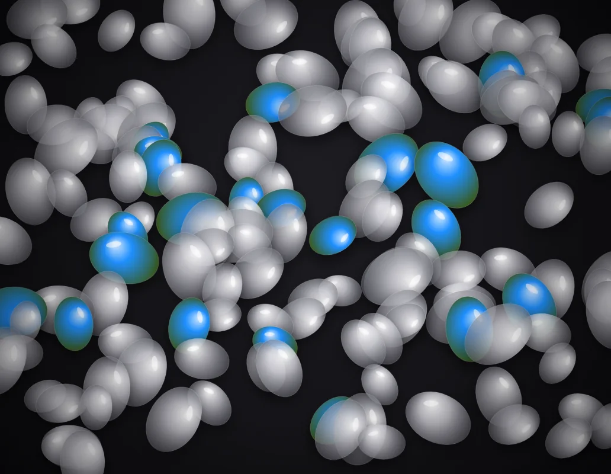
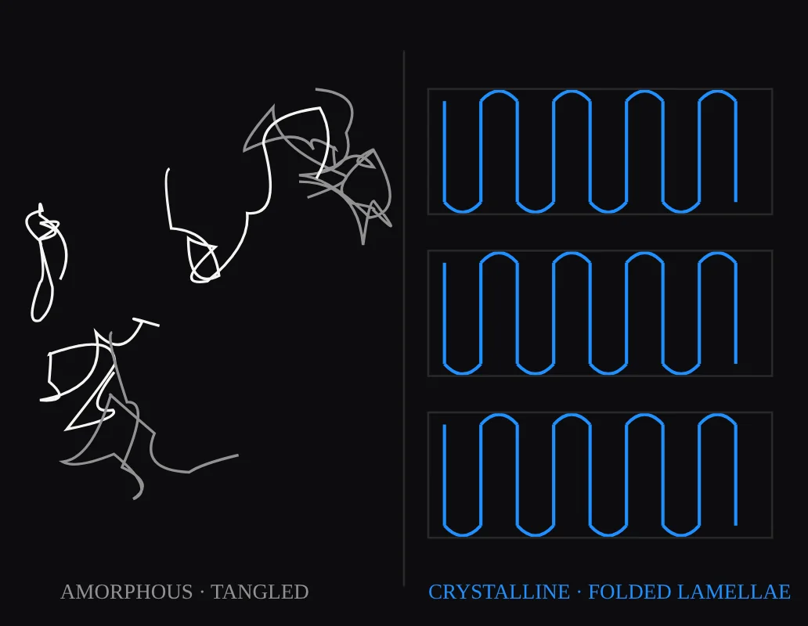
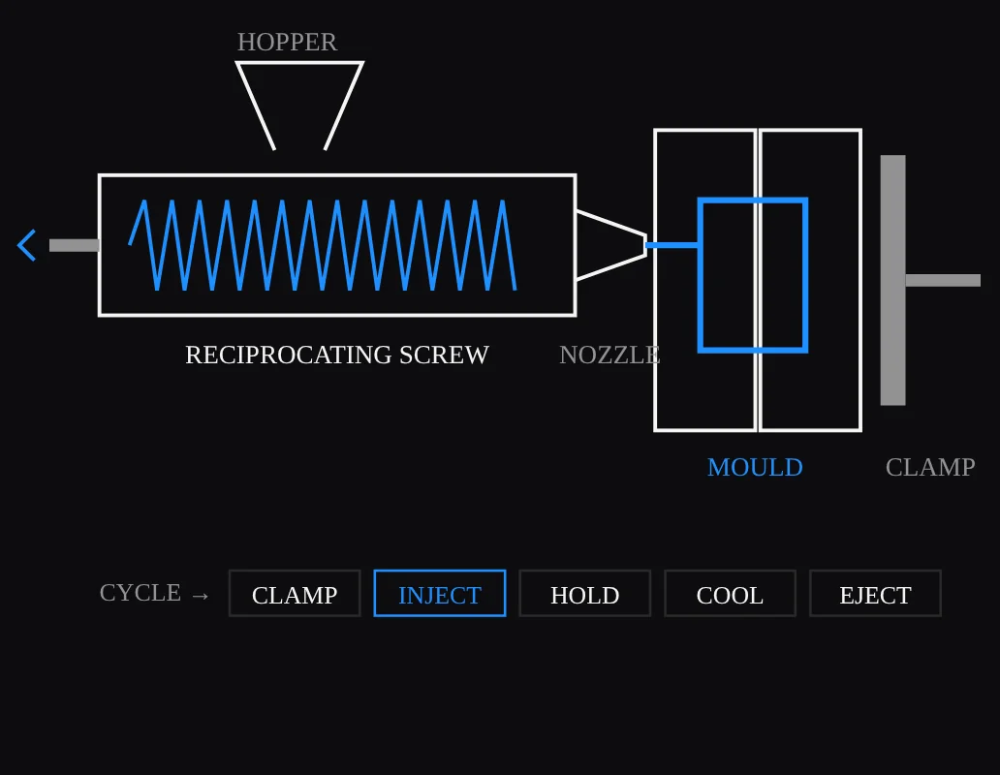
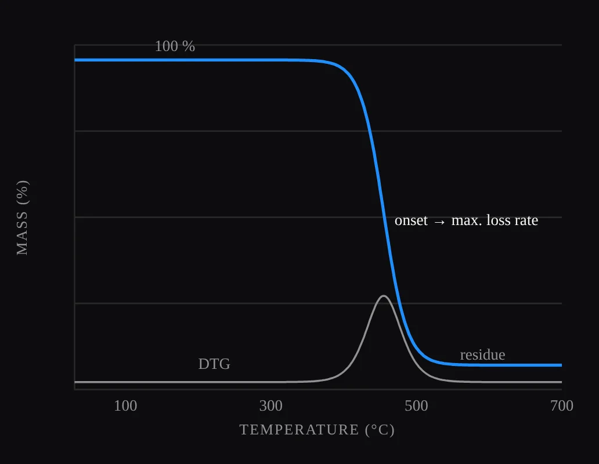
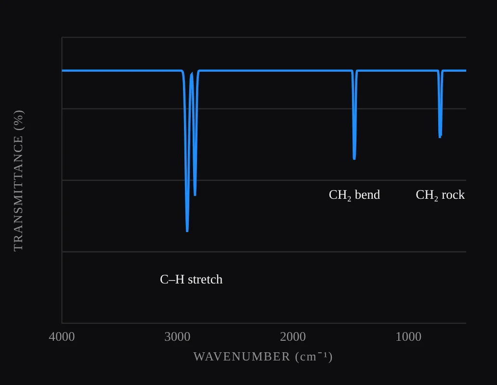
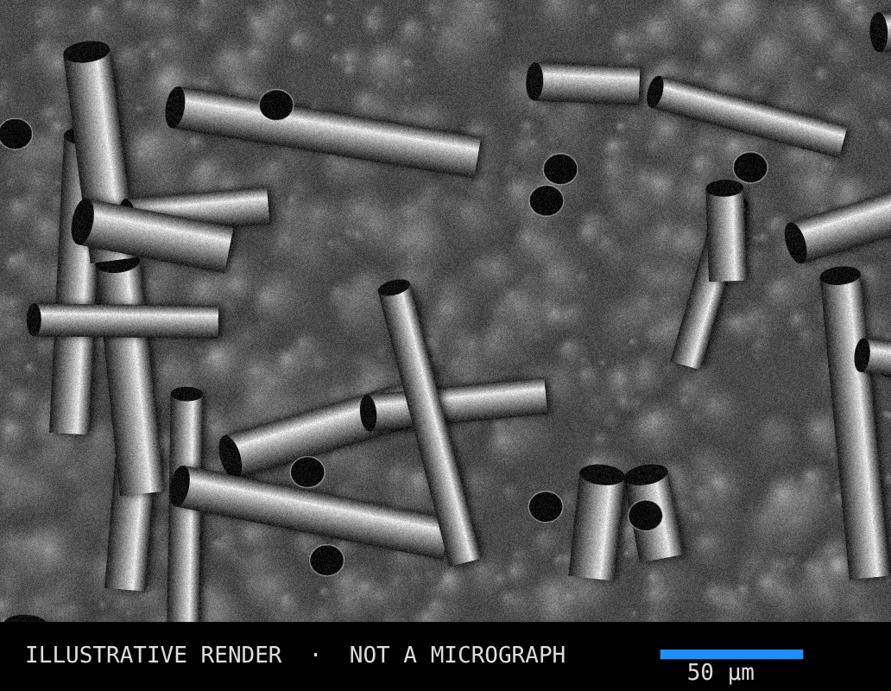

Plate 01 · Render · PP / PE
Resin pellets
Polyolefin granules are where processing begins — natural, translucent pellets blended with colour masterbatch before melting.
A polymer is a story told at three scales: the repeat unit, the way chains pack and tangle, and the process that freezes that structure into a part. These plates walk from the pellet to the lab bench. Original renders and schematics drawn for this site.

Polyolefin granules are where processing begins — natural, translucent pellets blended with colour masterbatch before melting.

Folded-chain lamellae (ordered) separated by tangled amorphous regions — the balance sets stiffness, clarity and toughness.

Feed, compression and metering zones convey, melt and pressurise the polymer before it is shaped through the die.

A reciprocating screw plasticises the melt and injects it into a cooled mould; clamp force keeps the halves shut against injection pressure.

Heat flow vs temperature reveals Tg as a step, cold crystallisation as an exotherm and melting as an endotherm. Shape is typical of a PET-like polyester; not measured data.

Mass loss under a temperature ramp shows onset of decomposition and residue; the derivative curve pinpoints the fastest-loss temperature.

Polyethylene's signature: C–H stretches near 2915/2848 cm⁻¹, CH₂ bending near 1470 and rocking near 720 cm⁻¹.

The kind of view SEM gives of a fibre composite: fibre pull-out and matrix tearing that reveal how well fibre and polymer bonded.